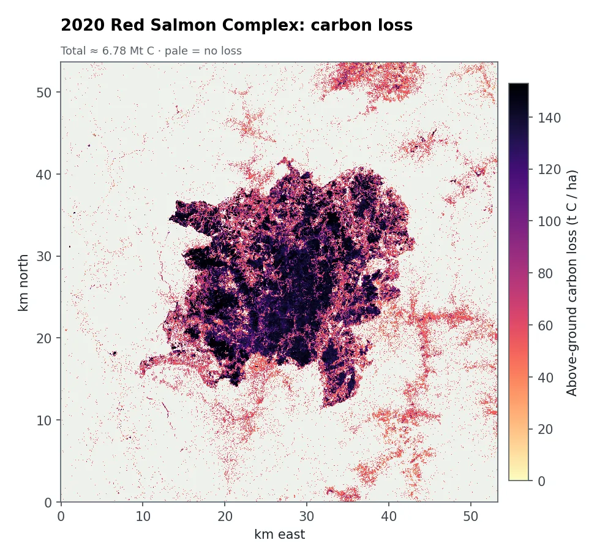
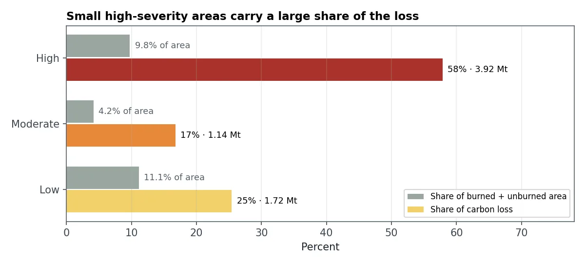
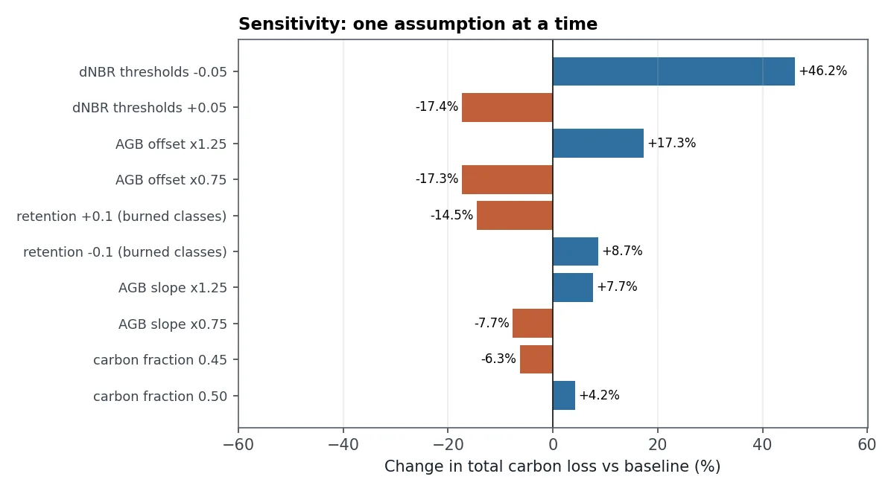

问题
林地所有者、碳汇项目和气候报告都需要知道一场火释放了多少碳。答案取决于每块林地烧得多严重，以及火前有多少木材。
我做了什么
- 对比 Sentinel-2 影像：2020 年 7 月（火前）和 2021 年 6 月（火后），分辨率 10 m。
- 绘制火烧强度：用 dNBR火烧前后归一化燃烧比的差值。下降越多，植被烧得越严重。 按标准阈值分为未过火、低、中、高强度。
- 估算火前的木材量（地上生物量地上生物量：树干、树枝和树叶的干重，单位为吨/公顷。），使用简单的植被模型，并估计每个强度等级损失多少。
- 把生物量换算成碳（干木材的 48% 是碳）并汇总。
- 对每个假设做压力测试：逐一上下调整，重新跑完整估算。
结果显示了什么


高强度火烧只占约 10% 的面积，却造成了 58% 的碳损失。森林总共损失了约 680 万吨碳，约为火前储量的 17%。

敏感性测试显示，影响最大的假设是火烧强度阈值：稍微调低阈值，总量就上升 46%。因此需要给出一个范围，而不是一个数字，而实地样地最能缩小这个范围。
结果有多可靠？
- 生物量模型是简化假设，没有用实测数据校准，可以换成已发表的生物量地图。
- 季节不同。两景影像分别来自不同年份的 7 月和 6 月，火场外一些“低强度”像元可能只是季节变化。
- 只计算了地上活树。土壤、枯落物和之后陆续死亡的树木未计入。
- 这项分析的早期版本用另一种火烧图层得到 4.5 Mt，差异原因在代码仓库中有说明。
可以交付什么
- 火烧强度图和碳损失图（GeoTIFF）
- 按强度等级和关注区域汇总的表格
- 显示合理范围的敏感性表
- 在哪里布设实地样地最能降低不确定性的建议